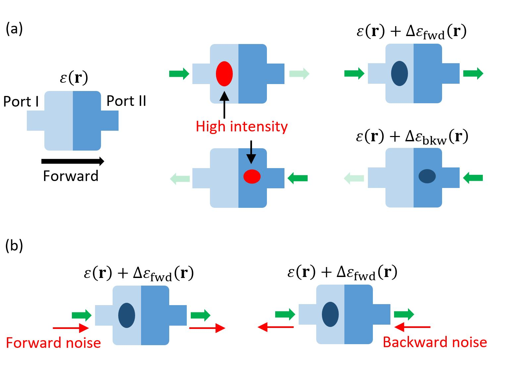
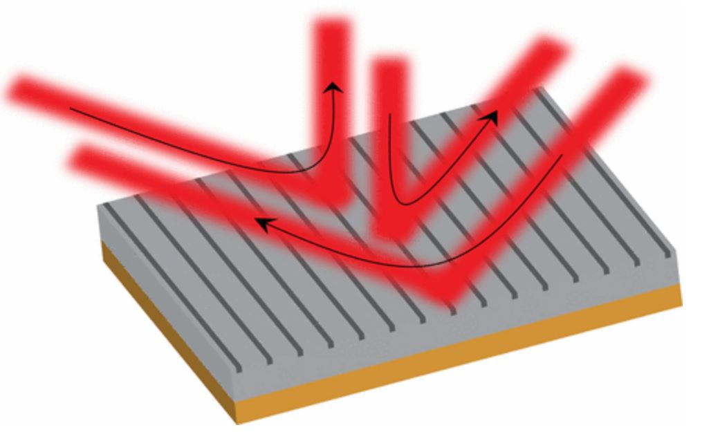
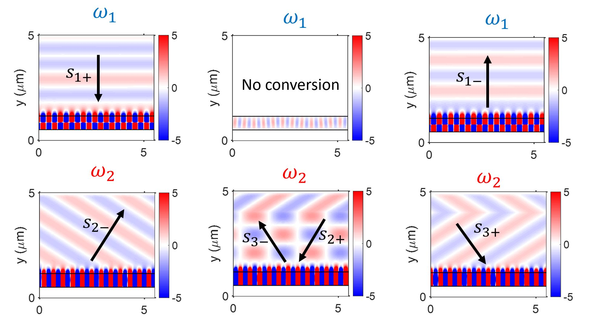
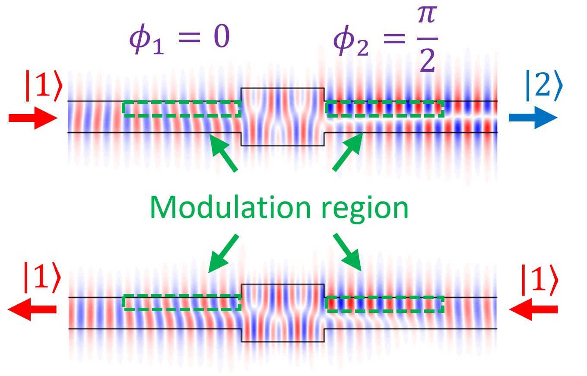
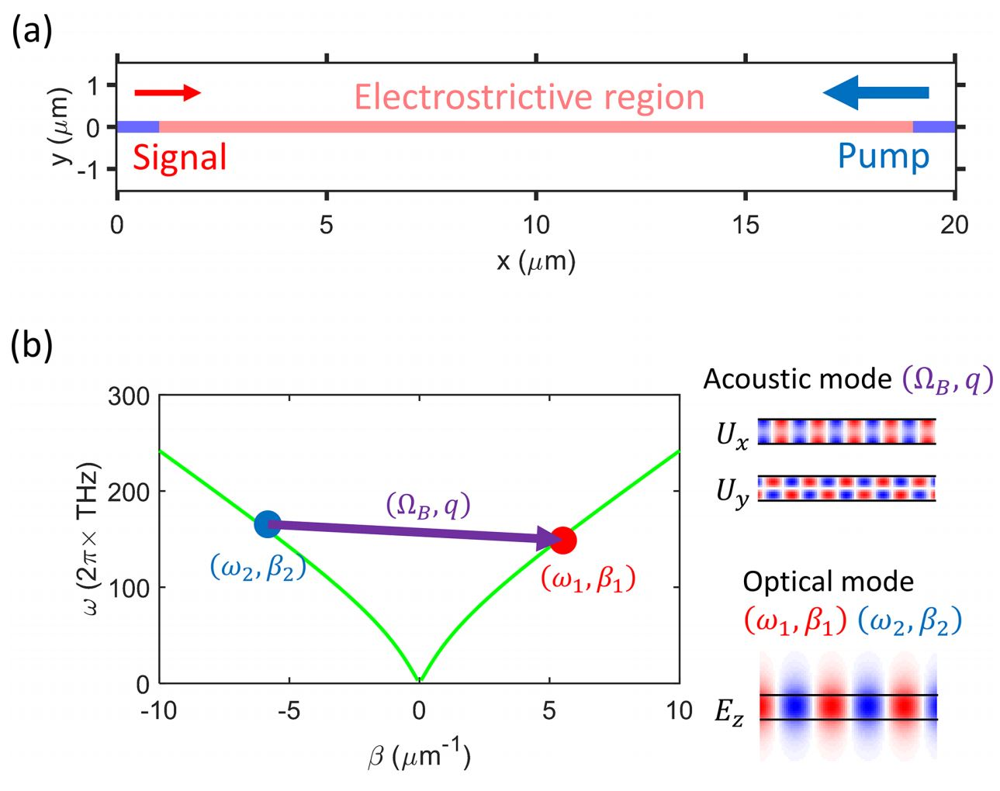
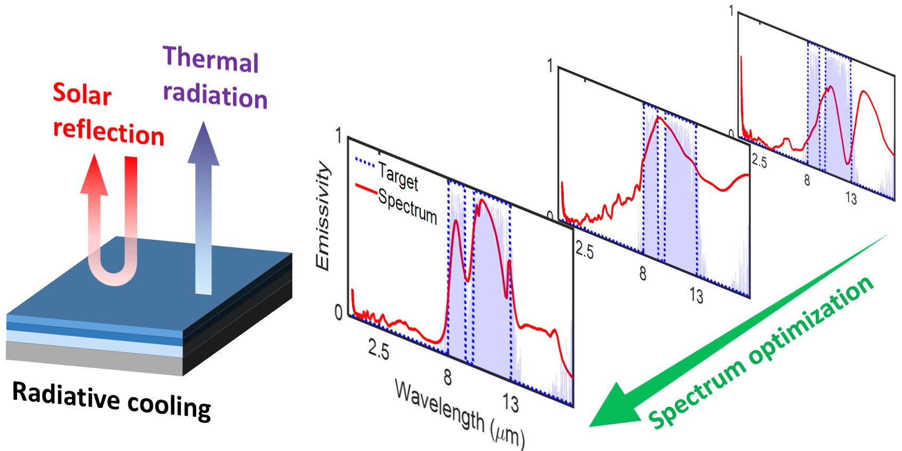
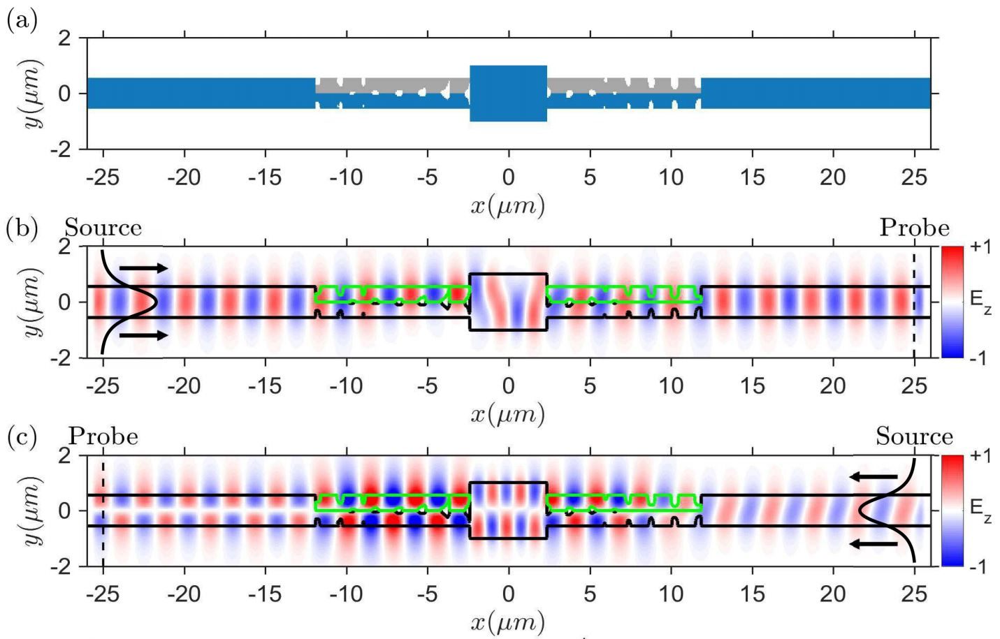

In almost all materials, light has this interesting property that if you can transmit from point A to point B, you can also transmit equally well from point B to point A. This property is known as the Lorentz reciprocity, which constrains that any multi-port optical device must have a symmetric scattering matrix if they are built with linear, time-independent, and symmetric permittivity and permeability distributions. On the other hand, devices that break reciprocity, known as optical isolators, have an asymmetric scattering matrix and allows light to flow in only one direction but not the reverse. Such devices are very important in modern photonics applications, as they provide lasers with feedback protection, and they regulate the flow of light in a communication channel by suppressing spurious reflections.
Traditionally, reciprocity is broken with magneto-optical materials. These materials, however, are not compatible with the standard optoelectronic materials, and it is difficult to integrate them into standard optoelectronic platforms. As such, much of the recent optical isolation research has been focused on using nonmagnetic approaches.
In my research, I studied both the use of nonlinear optics and dynamic modulation to break reciprocity and build optical isolators. With nonlinear optics, my work revealed that there is a significant limitations on the practical use of intensity-dependent optical isolators. Therefore, much of my focus lies in the use of dynamic modulation of refractive index to break reciprocity.
|
|
 |
The ability to manipulate the optical phase-front is central to optical engineering. Traditional optical elements, such as lenses and mirrors, rely on the mechanism of gradual phase-accumulation as light propagates inside an optical medium. This often leads to bulky devices whose thicknesses are at least a few wavelengths in thickness. Metasurfaces, on the other hand, can apply abrupt a phase gradient with a thickness that is comparable or smaller than the optical wavelength, which leads to devices with a much smaller footprint.
Built upon existing concepts in metasurfaces and my work in nonreciprocal photonics, I focus this part of my research on designing nonreciprocal metasurfaces using the dynamic modulation of the refractive index. This gives a powerful new degress of freedom in the ability for metasurfaces to control the flow of light, and my work demonstrated optical isolation and circulation on a platform that is much thinner than the optical wavelength.
|  |  |
It is remarkable that despite the seeming simplicity of Maxwell's equations, electromagnetic problems with even some of the simplist geometries (e.g. a rectangular scatterer) does not have a closed form solution. It is therefore important to develop numerical methods to approximate the electromagnetic solutions to the best of our abilities.
In my research, I focused on developing numerical methods to simulate systems that have a large time-scale difference. For example, I have constructed efficient frequency domain methods to simulate the effects of a ~10GHz optoelectronic modulation or acoustic wave on a ~200THz optical wave. I demonstrated these methods in the finite-difference discretization of Maxwell's equations, but the concepts of these simulations should be generalizable to other discretization schemes, such as the finite-element method.
Aside from numerical methods in academic research, I have also written some of the more standard FDTD and FDFD solvers. For more information, please check out my GitHub page.
|  |  |
Along with numerical methods, I work on various optimization techniques in photonics. For instance, one of my projects deals with the optimization of reflectivity/emissivity spectrum for radiative heat transfer. In another project, I worked with my labmate to develop an adjoint variable method (AVM) to optimize the performance of an electro-optic modulator for mode and frequency conversion.
|  |  |